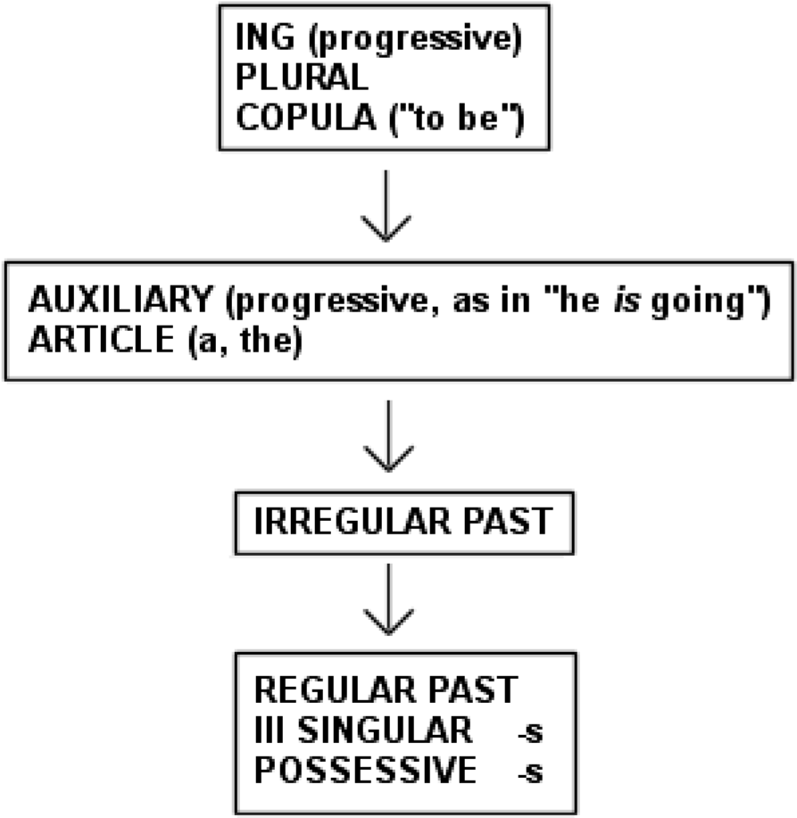

认知派、社会派 #
习得的五个假设 #
习得-学得假说 #
习得与学习的区别也许是这里提出的所有假设中最基本的。它指出成年人有两种不同且独立的方式来发展第二语言的能力。
第一种方式是语言习得，这个过程与儿童发展母语能力的方式相似，甚至完全相同。语言习得是一个潜意识的过程；语言习得者通常不会意识到他们正在习得语言，而只知道他们正在使用语言进行交流。语言习得的结果，获得的能力，也是潜意识的。我们通常不会有意识地意识到我们所习得的语言的规则。相反，我们对正确性有一种“感觉”。语法句子“听起来”是正确的，或者“感觉”是正确的，而错误则感觉是错误的，即使我们没有有意识地知道违反了什么规则。
描述习得的其他方式包括内隐学习、非正式学习和自然学习。在非技术语言中，习得是“拾取”一种语言。
培养第二语言能力的第二种方法是语言学习。今后我们将使用“学习”一词来指代第二语言的有意识知识、了解规则、意识到它们并能够谈论它们。用非技术术语来说，学习是“了解”一种语言，被大多数人称为“语法”或“规则”。一些同义词包括语言的正式知识或显性学习。
一些第二语言理论家认为儿童可以习得，而成人只能学习。然而，习得学习假说声称，成年人也会习得“习得”语言的能力，这种能力并不会在青春期消失。这并不意味着成年人总是能够达到第二语言的母语水平。这确实意味着成年人可以使用儿童使用的相同自然“语言习得设备”。
自然顺序假说 #
年来语言习得研究中最令人兴奋的发现之一是发现语法结构的习得以可预测的顺序进行。特定语言的习得者倾向于较早习得某些语法结构，而较晚习得其他语法结构。各个收购方之间的一致性并不总是 100%，但存在明显的、统计上显着的相似之处。
就自然顺序假说而言，英语也许是研究最多的语言，而在英语的所有结构中，形态学是研究最多的。 Brown (1973) 报告说，学习英语作为第一语言的儿童往往比其他人更早地习得某些语法语素或功能词。例如，渐进标记ing （如“他正在打棒球*”* ）和复数标记 /s/（“两只狗*s* ”）是最先获得的语素，而第三人称单数标记 /s/（如“He live *s* in New York”）和所有格 /s/（“John’s *hat* ”）通常是在很晚之后才获得的，从六个月到一年后出现。 de Villiers 和 de Villiers (1973) 从横截面上证实了布朗的纵向结果，表明布朗发现最早获得的物品也是孩子们更容易做对的物品。换句话说，对于那些研究的语素，难度顺序与习得顺序相似。
布朗的研究结果发表后不久， Dulay和 Burt (1974, 1975) 报告说，学习英语作为第二语言的儿童也表现出语法语素的“自然顺序”，无论他们的母语是什么。儿童第二语言习得顺序与第一语言习得顺序不同，但不同群体的第二语言习得者表现出惊人的相似性。 Dulay和 Burt 的结果得到了许多研究者的证实（Kessler 和Idar ，1977； Fabris ，1978；Makino，1980）。 Dulay和 Burt 使用了 Brown 最初研究的 14 个语素的子集。 Fathman (1975) 通过口语表达测试（SLOPE 测试）证实了儿童第二语言习得的自然顺序，该测试探讨了 20 种不同的结构。
继Dulay和 Burt 的工作之后，Bailey、Madden 和Krashen (1974) 报告了成人受试者的自然顺序，该顺序非常相似
儿童第二语言习得中所见的情况相同。正如我们稍后将看到的，这种自然秩序仅在某些条件下出现（或者更确切地说，它仅在某些条件下消失！）。一些确认成人语法语素自然顺序的研究包括 Andersen (1976)，他使用了组合； Krashen 、Houck、 Giunchi 、Bode、Birnbaum 和Strei (1977)，使用了自由言论；还有Christison (1979)，使用言论自由。使用 SLOPE 测试的成人研究也证实了自然顺序并扩大了数据库。 Krashen 、 Sferlazza 、Feldman 和Fathman (1976) 发现了与Fathman (1975) 儿童第二语言顺序类似的顺序， Kayfetz -Fuller (1978) 也使用 SLOPE 测试报告了自然顺序。
如上所述，第二语言的习得顺序与第一语言的习得顺序不同，但也有一些相似之处。表 2.1，来自Krashen
(1977 ) ,呈现平均
表 2.1。英语作为第二语言的语法语素习得的“平均”顺序（儿童和成人）

监控假设 #
虽然习得与学习的区别声称两个独立的过程在成人中共存，但它并没有说明它们如何在第二语言表现中使用。监控假说认为习得和学习是以非常特定的方式使用的。通常，习得会“启动”我们用第二语言说话，并影响我们的流利程度。学习只有一个功能，那就是作为一个监控者，或者说编辑者。学习的作用只是为了改变我们的言语形式，而后天系统已经“生产”了它。这可能发生在我们说话或写作之前，或之后（自我纠正）。图2.1 模拟了这个过程。
有意识的学习只能作为“监视器”使用，它可以在实际说出或写出话语之前或之后改变习得系统的输出。正是后天系统启动了正常、流利的言语表达。
监视器假说意味着正式规则或有意识的学习在第二语言表现中只发挥有限的作用。随着过去几年研究的进展，这些局限性变得更加明显。第四章回顾的这项研究强烈表明，第二语言表演者只有在满足三个条件时才能使用有意识的规则。这些条件是必要的而非充分的，也就是说，即使满足所有三个条件，表演者也可能无法充分利用他的有意识语法。我在这里列出了这些条件并进行了简要说明。我们将在第四章中更详细地讨论它们：
- 时间。为了有效地思考和使用有意识的规则，第二语言表演者需要有足够的时间。对于大多数人来说，正常的谈话没有足够的时间来思考和使用规则。在谈话中过度使用规则可能会导致麻烦，即犹豫不决的谈话风格和对对话伙伴所说内容的注意力不集中。
- 注重形式。要有效地使用监视器，时间是不够的。表演者还必须关注形式，或思考正确性（ Dulay和 Burt，1978）。即使我们有时间，我们也可能过于专注于我们所说的话，而没有注意我们是如何说的。
- 了解规则。这是一个非常艰巨的要求。语言学告诉我们，语言的结构极其复杂，他们声称只描述了最著名语言的一小部分。我们可以确定，我们的学生只接触到该语言全部语法的一小部分，而且我们知道，即使是最好的学生也无法学习他们所接触到的每条规则。
输入假设 #
与其他假设相比，我们将花费更多的时间来研究这个假设，原因有两个。首先，这些材料中的大部分内容相对较新，而其他假设已经在几本出版的书籍和文章中进行了描述和讨论。第二个原因是它的重要性，无论是理论还是实践。输入假设试图回答可能是我们领域中最重要的问题，并给出对语言教学的所有领域都有潜在影响的答案。
重要的问题是：我们如何获得语言？如果监控假设是正确的，即习得是核心而学习是次要的，那么我们教学法的目标应该是鼓励习得。那么我们如何获取的问题就变得至关重要。
本节的组织如下：在给出任何支持证据之前，我将首先提出输入假设。接下来是对第一语言和第二语言习得研究证据的描述。然后，我们将简要介绍应用语言学研究的证据，第五章将对此进行更详细的讨论。
(a ) 假设的陈述
让我们首先重申一下我们如何获得的问题：鉴于自然顺序假设的正确性，我们如何从一个阶段转向另一个阶段？如果收购方处于“第四阶段”，如何才能进入“第五阶段”？更一般地说，我们如何从阶段i开始，我 代表
当前能力，到i + 1 ，下一个级别？输入假设提出以下主张：从阶段i移动到阶段i + 1的必要（但非充分）条件是获取者理解包含i + 1的输入，其中“理解”意味着获取者专注于含义而不是消息的形式。
换句话说，只有当我们理解的语言所包含的结构“稍微超出”我们现在的结构时，我们才能获得知识。这怎么可能？我们如何理解包含我们尚未掌握的结构的语言？这个明显悖论的答案是，我们不仅仅使用我们的语言能力来帮助我们理解。我们还利用上下文、我们对世界的了解、我们的语言外信息来帮助我们理解针对我们的语言。
输入假设与我们在第二语言和外语教学中通常的教学方法背道而驰。正如 Hatch (1978a) 所指出的，我们的假设是我们首先学习结构，然后练习在交流中使用它们，这就是流畅性的发展方式。输入假设的说法恰恰相反。它说我们首先通过“寻求意义”来获得，结果，我们获得了结构！ （有关第一语言习得的讨论，请参阅
麦克纳马拉，1972。）
因此，我们可以将输入假设的 (1) 和 (2) 部分表述如下：
- 输入假设与习得有关，与学习无关。
- 我们通过理解包含结构的语言来获得 它超出了我们当前的能力水平（ i + 1 ）。这是在上下文或语言外信息的帮助下完成的。
输入假设的第三部分表示输入必须包含i + 1才能对语言习得有用，但它不必仅包含i + 1 。它表示，如果收单方理解输入，并且有足够的输入，则将自动提供i + 1 。换句话说，如果通信成功，则提供i + 1 。正如我们稍后将讨论的，这意味着最佳输入甚至不应该尝试故意瞄准i + 1 。我们都熟悉试图故意涵盖i + 1的教学大纲。有一个“当天的结构”，通常教师和学生都认为课程的目的是教授或练习特定的语法项目或结构。一旦这个结构被
“掌握”，课程大纲进入下一个。这部分输入假设意味着没有必要刻意尝试提供i + *1 。*正如我们稍后将看到的，有理由怀疑它甚至可能有害。
因此，输入假设的第(3)部分为：
- 当通信成功时，当输入被理解且足够时，将自动提供i + 1 。
输入假设的最后部分指出，口语流利程度不能直接教授。相反，它会随着时间的推移自行“出现”。 4根据这种观点，教授口语的最好方法，也许也是唯一方法，就是提供可理解的输入。当收购方感觉“准备好了”时，早期发言就会出现；然而，对于不同的人来说，这种准备状态到达的时间有所不同。此外，早期的言语通常在语法上不准确。随着收单方听到并理解更多的输入，准确性会随着时间的推移而提高。输入假设的第 (4) 部分因此为：
- 生产能力显现。它不是直接教授的。
(b )支持假设的证据
- *儿童第一语言习得。*输入假设与已知的“看护者言语”非常一致，即父母和其他人在与幼儿交谈时所做的修改。对我们来说，看护者言语最有趣、也许也是最重要的特征是，它不是有意教授语言的尝试。相反，正如 Clark 和 Clark（1977）指出的那样，看守者的言语被修改以帮助理解。看护者说话“更简单”，努力让孩子理解自己。
我们感兴趣的第二个特征是，我们发现看护者的言语虽然在语法上比成人之间的言语更简单，但它是“粗略地调整”到孩子当前的语言能力水平，而不是“微调”。换句话说，看护者的言语并没有根据每个孩子的水平进行精确调整，而是随着孩子的进步而变得更加复杂。粗调的非常好的证据来自 Cross (1977) 和 Newport、 Gleitman的研究
Gleitman (1977) 报告说，输入复杂性与儿童语言成熟度测量之间的相关性虽然是积极的且通常很重要，但通常不是很大。对这一发现的解释是，看护者并没有完全瞄准i + 1 。他们为孩子提供的输入包括i + 1 ，但也包括许多已经获得的结构，加上一些尚未获得的结构（ i + 2 ， i + 3等），并且孩子可能还没有准备好。换句话说，看护者不提供基于语法的教学大纲！ （有关粗调的更完整回顾，请参阅Krashen 1980、1981。）
我们关心的看守言论的第三个特征被称为“此时此地”原则。众所周知，看护者谈论的主要是孩子能感知到的东西，以及周围环境中的东西。与孩子的对话更有可能涉及房间里正在发生的事情（“看到球了吗？”），而不是房间里和当前不存在的事情（“明天我们在楼上做什么？”）。正如纽波特等人。 (1977)指出，这是一个主题约束——“此时此地”原则反映了看护者和孩子的共同利益。
虽然没有直接证据表明看护者语音确实比未经修改的输入更有效，但输入假设预测看护者语音对孩子非常有用。首先，它是或旨在是可理解的。 “此时此地”功能提供了额外的语言支持（上下文），帮助孩子理解包含i + 1的话语。正如麦克纳马拉（MacNamara，1972）指出的，孩子并不是先学习语法，然后再用它来理解。孩子首先理解，这有助于他获得语言。
如前所述，粗调的看护者语音涵盖了孩子的i + 1 ，但并不专门关注i + 1 。输入假设的第 (3) 部分声称这是最优的。粗调对于儿童母语习得具有以下优势：
-
它确保i + 1被覆盖，而无需猜测每个孩子的i + 1是什么。另一方面，故意瞄准i + 1可能会失败！
-
粗略调整的输入将一次为多个孩子提供i + *1 ，只要他们理解所说的内容。*微调输入，即使是准确的（即
即使它“击中” i + 1 ) ，也只会
i + 1与输入中强调的内容完全相同的孩子受益。
-
粗略调整的输入提供内置审查。我们不需要关心孩子是否“掌握”了某种结构，孩子是否注意到当天的输入，或者我们是否提供了足够的信息。通过自然的、粗略调整的输入， i + 1将发生并重复发生。
换句话说，如果第(3)部分是正确的，如果有足够的自然沟通和理解总是提供i + 1 ，那么看护者就不必担心有意识的编程结构。
这一定是一件好事！将语法排序的责任添加到父母身份中将使亲子沟通变得不那么自发并且更加困难。
- 第二语言习得的证据：简单的代码。输入假设也适用于第二语言习得。首先，如前所述，第二语言习得者，无论是儿童还是成人，也是一个“习得者”，就像儿童习得第一语言一样。另外，根据假设（2），第二语言和第一语言都有自然的习得顺序，因此我们也可以讨论第二语言习得者的i + *1 。*第三，第二语言习得者也可以接收到儿童所获得的修改输入。
该修改后的输入分为三种类型。外国人谈话的结果是母语人士对其语言能力不强的人进行修改的结果（例如，参见 Hatch、 Shapira和 Gough，1978 年的一些很好的例子）。当使用第二语言时，教师谈话是课堂上的外国人谈话，是课堂管理和解释的语言。第三个简单的代码是中介语谈话，即其他第二语言习得者的讲话。
虽然这些简单的代码和看守者的讲话之间存在一些差异（Long，1980；Freed，1980），但也有重要的相似之处。与看护者语音的情况一样，外国人谈话和教师谈话5中的修改不是为了语言教学的目的，而是为了交流的目的，帮助第二语言习得者理解所说的内容。其次，现有的研究表明外国人谈话和老师谈话
粗调到收购方的水平，而不是微调（Freed，1980； Gaies ，1977；有关评论，请参见Krashen ，1980）；更高级的第二语言表演者往往会获得更复杂的输入，但熟练程度和输入复杂性之间的相关性并不完美。
外国人的谈话和老师的谈话可能并不总是在“此时此地” ， 6但有帮助的母语人士和老师会找到其他方法来使输入内容易于理解。除了语言上的改变之外，它们还利用了习得者对世界的了解，这当然比习得第一语言的孩子的知识更多。此外，教师还使用教学辅助工具，例如图片和现实（参见第三章的讨论）。
输入假设预测这些简化的代码对于第二语言习得者将非常有用，就像看护者语音被认为对孩子有用一样。 （有关支持这一假设的一些初步案例历史数据，请参阅Krashen ，1980 年、1981 年。）输入假设还预测，自然的、交流的、粗调的、可理解的输入比直接针对i的微调输入具有一些真正的优势。 + 1 ，换句话说，旨在教授当天结构的课堂练习。
情感过滤假说 #
情感过滤假说阐述了情感因素如何与第二语言习得过程相关。情感的概念
Dulay和 Burt (1977)提出，与情感变量和第二语言习得领域的理论工作以及本章前面介绍的假设是一致的。
过去十年的研究证实，多种情感变量与第二语言习得的成功有关（ Krashen 1981 综述）。大多数研究可以归为以下三类之一：
- *动机。*具有高度积极性的表演者通常在第二语言习得方面做得更好（通常但并非总是“综合” 13 ）
- *自信心。*具有自信和良好自我形象的表演者往往在第二语言习得方面做得更好。
- *焦虑。*低焦虑似乎有利于第二语言习得，无论是个人焦虑还是课堂焦虑。
在一些地方，我假设这些态度因素与习得而不是学习直接相关，因为当使用交际型测试、利用后天系统而不是学习系统的测试以及当参加测试的学生在“习得丰富”的情况下使用了该语言，即可理解输入充足的情况。
情感过滤假说通过假定习得者的情感过滤器的强度或水平各不相同，来捕捉情感变量与第二语言习得过程之间的关系。那些态度对于第二语言习得不是最佳的人不仅会倾向于寻求较少的输入，而且他们还会有很高或很强的情感过滤器——即使他们理解了信息，输入也不会到达大脑的部分负责语言习得的，或称语言习得装置。那些对第二语言习得态度更有利的人不仅会寻求和获得更多的输入，而且他们的过滤器也会较低或较弱。他们会对输入更加开放，并且输入会“更深”（ Stevick ，1976）。
名词 #
-
可理解性输入
-
技能培养
比如写字
其它 #
-
输入必须是有趣的,否则就没人注意到它
-
输入要有效不仅需要有趣,引人入胜的非常的有趣,有趣到让你都忘记了,当下周围世界其它的事物